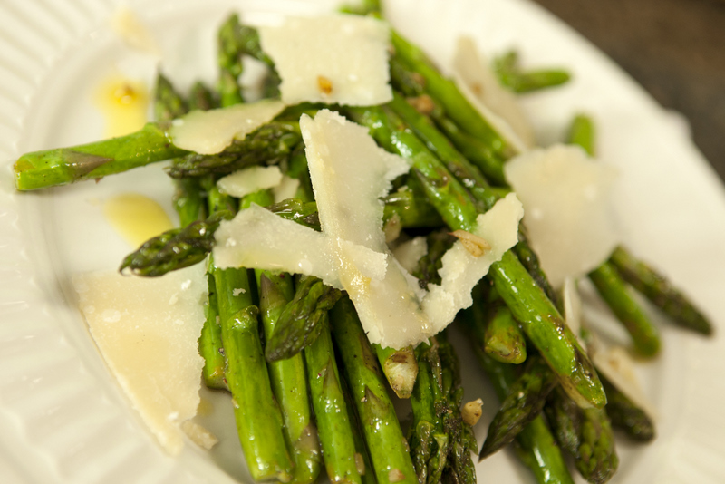

<DOCTYPE! html>
<html>
	<head>
		<title>Nick's Cookbook</title>
		<link href="../CSS style.css" type="text/css" rel="stylesheet" />
	</head>
	<body>
		<h1><center>Nick's Cookbook</center></h1>
		<h2>Pan-Fried Asparagus</h2>
		<br />
		<a href="http://pedersenfood.blogspot.com/2010/10/pan-fried-asparagus-with-garlic.html">Source of Recipe</a><br /><br /><br />
		<p>Estimated Time to Prepare: 10 minutes</p>
		<p>Servings: 4-8</p>
		<p>Ingredients:</p>
		<table>
			<tr class="odd">
				<td>1 bunch of asparagus</td>
				<td><form action="">
					<input type="checkbox" name="ing" value="1" />
				</form></td>
			</tr>
			<tr class="even">
				<td>2 Tbsp butter</td>
				<td><form action="">
					<input type="checkbox" name="ing" value="2" />
				</form></td>
			</tr>
			<tr class="odd">
				<td>1 Tbsp olive oil</td>
				<td><form action="">
					<input type="checkbox" name="ing" value="3" />
				</form></td>
			</tr>
			<tr class="even">
				<td>4 garlic cloves, thinly sliced</td>
				<td><form action="">
					<input type="checkbox" name="ing" value="4" />
				</form></td>
			</tr>
			<tr class="odd">
				<td>Salt and pepper, to taste</td>
				<td><form action="">
					<input type="checkbox" name="ing" value="5" />
				</form></td>
		</table>
		<br />
		<a href="sides11.html">START</a><br />
		<a href="../../homepage.html">Homepage</a><br />
		<a href="../sideshome.html">Sides</a>
	</body>
</html>